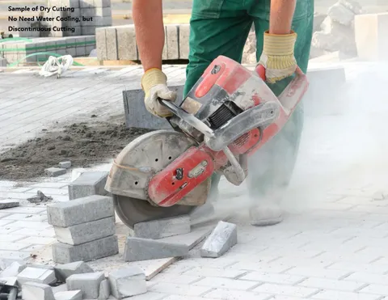

Diamond Concrete Cutting ek high-precision technique hai jo reinforced concrete aur stone mein surgical accuracy ke sath openings banane ke liye use hoti hai. Ye vibration-free aur dust-free process structural integrity ko maintain rakhta hai.

Vertical surfaces par doors aur windows ki opening banane ke liye track-mounted saw ka use hota hai jo ek dam straight cutting karta hai.
Plumbing aur electrical ducts ke liye perfectly circular holes create kiye jate hain bina as-paas ke concrete ko crack kiye.
Roads aur slabs mein trenches banane ke liye industrial diamond blades ka use hota hai jo heavy reinforcement ko bhi smoothly cut karti hain.
Building ke baaki hisse mein micro-cracks nahi aane deta.
Wet cutting method se dhool mitti nahi udti (Eco-Friendly).
Traditional demolition ke mukable bahut kam shor hota hai.